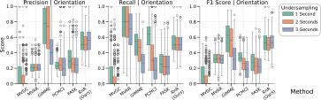
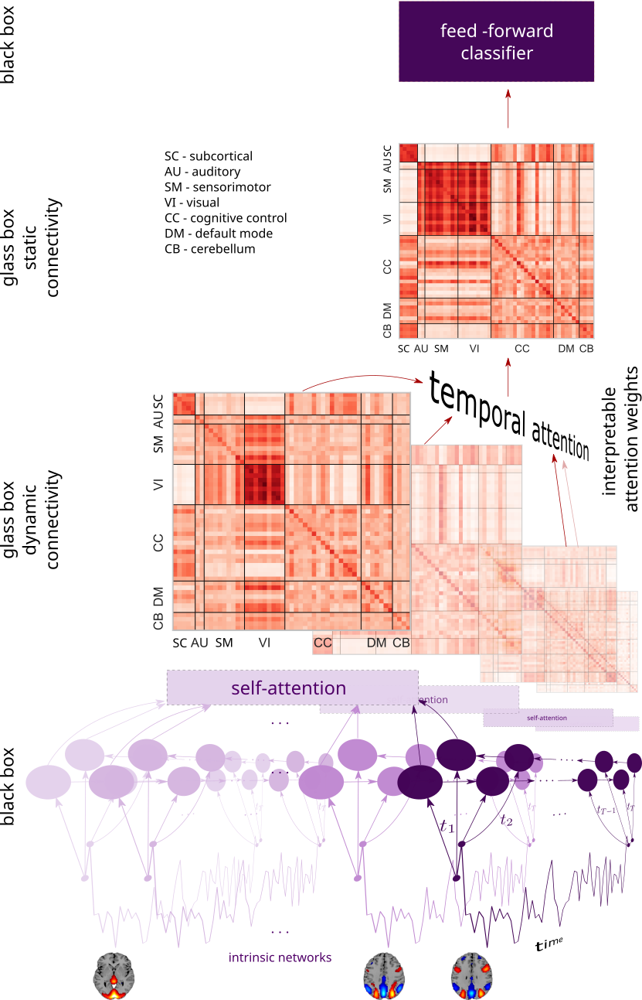
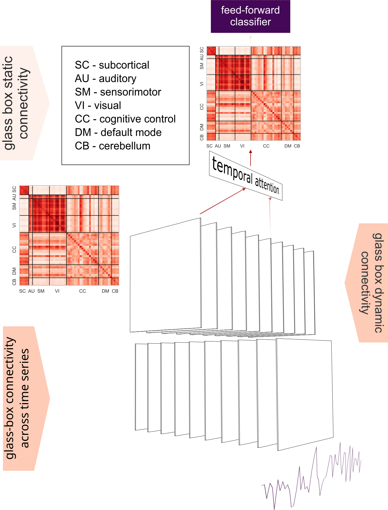
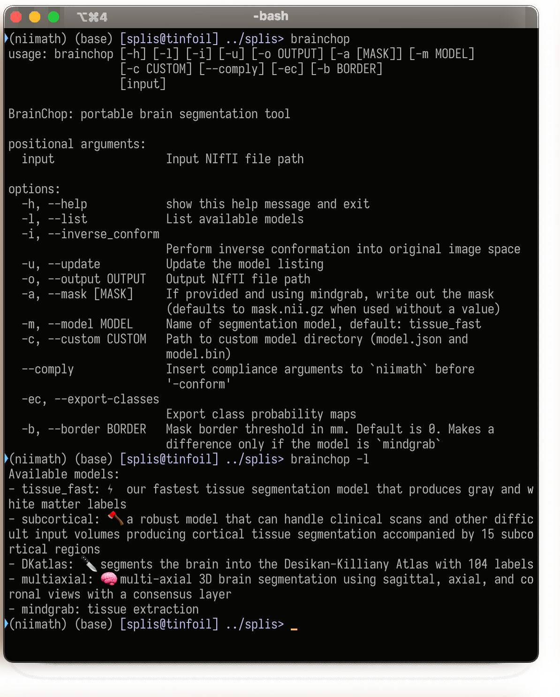
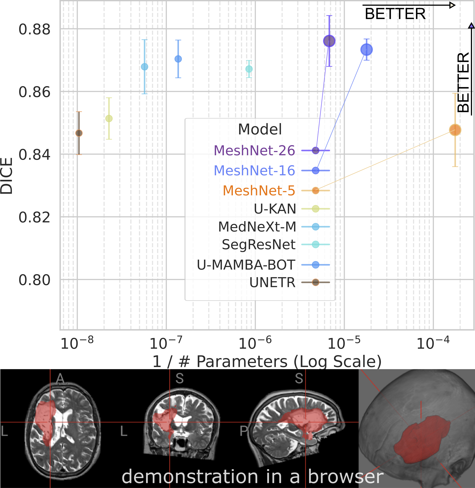

From Brain Causality to Browser AI
Machine Learning & Neuroimaging at TReNDS

ML Inspired by & Applied to Neuroimaging
1. Brain Causality
Bridging fast neural causal timescales ($\approx\!100\text{ ms}$) and slow fMRI measurement timescales ($\approx\!2\text{ s}$) via constraint solving & deliberate undersampling.

 Sajad Abavisani
Sajad AbavisaniKseniya Solovyeva
2. ArchInterp
Architected Interpretability: constructing deep models with transparent causal & directed-graph bottlenecks rather than post-hoc saliency.

 Usman Mahmood
Usman MahmoodPavel Popov
3. Decentralized ML
Federated learning across siloed clinical sites (neuroflame.org) & sparse unified subnetworks at initialization (SSFL).
 Riyasat Ohib
Riyasat OhibBishal Thapaliya
4. Browser 3D AI
Brainchop: zero-footprint, client-side 3D segmentation & universal skull-stripping (MeshNet & MindGrab) in the browser.

 Armina Fani
Armina FaniAlex Fedorov
5. Fixed-Point AI
Moving beyond ballistic feedforward execution via introspective dynamic compute (MIND) & fixed-point self-attention (SELF).
 Mrinal Mathur
Mrinal Mathur
Brain Causality: The Timescale Mismatch

$\approx 100\text{ ms}$

$\mathcal{G}^u \stackrel{?}{\longleftarrow} \mathcal{G}^1$

$\approx 2\text{ s}$ ($u \approx 20$)

Backward Inference Problem: Given an observed graph $\mathcal{H}$ at slow measurement timescale (with unknown undersampling rate $u$), what fast causal structures $\mathcal{G}^1$ could have generated it?

The Undersampling Equivalence Class


Theorem (GRACE-C): Deciding whether a consistent causal graph $\mathcal{G}^1$ exists for a given measured graph $\mathcal{H}$ is NP-complete for all undersampling rates $u \ge 2$.
GRACE-C: Scaling to $\approx 100$ Variables


RnR: Meta-Solver for Undersampled Time Series


RnR: Noise Robustness & fMRI Salience Network


Causal Learning Through Deliberate Undersampling


Central Question of Interpretability
Can we learn from the model something about the data that we did not explicitly teach it?


NeuroImage 2024
A Simple, Tough-to-Beat Baseline (MeanMLP)

- 9 of 13 models plateau at 0.70–0.73 AUC
- Winner: MeanMLP (average embeddings over time)
- Fancy brain GNNs & transformers buy no extra accuracy
- Conclusion: Spend model capacity on Architected Interpretability!
ArchInterp: Architected Interpretability




Senior Scientist II
Sail Biomedicines (Boston, MA)
Interpretable Glass-Box Layer for Brains


IEEE TMI 2026 (Accepted)
DECIFRA: ArchInterp with Causal Graphs

IEEE TMI 2026 (Accepted)
Siloed Neuroimaging Data vs. Hungry AI
Now at Google DeepMind
Efficient Federated Learning for Neuroimaging
Distributed Neuroimaging Challenges
- Strict Privacy & Governance: Patient brain scans cannot be centralized across institutions or countries.
- Site & Scanner Drift: Multi-site neuroimaging exhibits severe non-IID covariate and label shifts.
- WAN Bandwidth Bottleneck: Synchronizing dense 3D neuroimaging models across dozens of hospital nodes stalls training.
Our Decentralized Stack
- Adaptive Federated Optimization: Robust aggregation across heterogeneous neuroimaging sites (Frontiers in Neuroinformatics 2024).
- Initialization Sparsity (SSFL): Finding a unified sparse subnetwork before round 1 (TMLR 2026).
- Open Platforms: Deployed in COINSTAC and our next-generation platform NeuroFLAME.org.

TMLR 2026
SSFL: Sparse Subnetworks at Initialization
- Dense 3D models → prohibitive WAN comms
- SSFL finds a salient unified subnetwork at initialization across sites
- 50% sparse: matches or beats dense FedAvg
- 90% sparse: 10× less communication while baselines collapse
- Makes foundation-scale neuroimaging FL practical
 neuroflame.org
neuroflame.org
Why Browser AI? The Deployment Gap
Publications
Abundance
Models
Scarcity
Usable Tools
Absence
“Only 40% of radiology AI studies shared models; deep learning models showed the lowest availability (11.5%).”
- Privacy & HIPAA: Uploading patient 3D MRIs to cloud servers is a non-starter.
- Data Sovereignty: Keep data on the user’s machine — ship the tiny model to the browser!
- Zero Setup: No CUDA, no Docker, no IT approval — runs on any laptop, tablet, or phone.

 brainchop.org
brainchop.org
Worldwide Client-Side Adoption & Open-Source Community


Under the Hood: MeshNet Parameter Efficiency



MindGrab
MindGrab: Universal Skull-Stripping
Robust skull-stripping of any MRI modality on any device — decoupling synthetic data generation from fast training


IEEE JBHI 2024
MindGrab: Efficiency & Boundary Precision


ICLR 2025 Oral · NeurIPS 2026
Standard Deep Learning is Ballistic

Token-Space Iteration (CoT)
$\text{Input} \to \text{Model} \to \text{Tokens} \to \text{Model}\dots$
- Discrete Bottleneck: Continuous state crushed into 1-of-$V$ token IDs at every step
- Full Stack Re-evaluation: All $L$ layers re-run per token
- $O(N^2)$ Context Growth:KV-cache explodes with reasoning length
Latent Fixed-Point Iteration
$\vec{z}^{(k+1)} = f_\theta(\vec{z}^{(k)}, \vec{x}) \longrightarrow \vec{z}^*$
- Full Bandwidth: Refines rich $d$-dimensional representations directly
- Weight Tying (+0% Params): Depth scales at test time without adding weights
- Adaptive Halting: Stops automatically when $\|\vec{z}^{(k+1)} - \vec{z}^{(k)}\| < \epsilon$
Core Principle: Replace fixed-depth layer stacks with contractive operators iterated to equilibrium — allocating compute dynamically per input and per layer.
MIND: Adaptive Thinking via Introspection


Closing the Loop: Fixed-Point Self-Attention

| Model | Params | ImageNet Top-1 | COCO mAP |
|---|---|---|---|
| ResNet-152 | 60M | 78.3% | 78.5% |
| ViT-B/16 | 86M | 81.8% | 82.3% |
| Swin-B | 88M | 83.5% | 84.2% |
| DeiT-B | 86M | 83.1% | 83.0% |
| SELF-ViT (Ours) | 86M (+0%) | 86.3% (+4.5%) | 86.7% (+4.4%) |
| Backbone | Params | GLUE Avg | SQuAD v2.0 F1 |
|---|---|---|---|
| BERT-Base (Standard) | 110M | 84.6 | 76.3 |
| BERT-Base + SELF | 110M (+0%) | 86.1 (+1.5) | 79.1 (+2.8) |
| ELECTRA-Base (Standard) | 110M | 85.8 | 86.1 |
| ELECTRA-Base + SELF | 110M (+0%) | 88.2 (+2.4) | 88.3 (+2.2) |